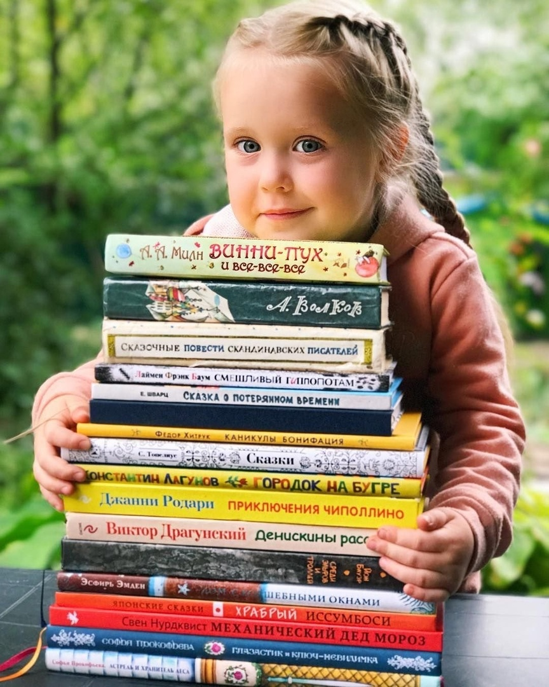

Иностранные языки:
- Проще говоря (ул. Розы Люксембург, 3, второе крыльцо со стороны САФУ, этаж 1)
тел: +7 (963) 200-43-53, сайт: Проще говоря
- Easy-E (пр. Чумбарова-Лучинского, 41, 2 этаж)
тел: +7 (953) 261-81-11 Easy-E
- English Direct (ул. Наб. Северной Двины, 112 кор.3, офис 321-322, этаж 3)
тел: +7 (921) 081-16-25 English Direct
- ИнтерКонтакт (ул. Троицкий просп., 94, офис 16, этаж 2)
тел: +7 (906) 282-25-04 ИнтерКонтакт
Литература:
- Централизованная библиотечная система (ул. Троицкий просп., 64, этаж 2)
тел: +7 (8182) 21-12-61 Центральная библиотека
- Архангельская областная научная библиотека им. Добролюбова (ул. Урицкого, 1, тц Чайка)
тел: +7 (8182) 44-60-40 Библиотека им. Добролюбова
- Детская областная библиотека им. А.П. Гайдара (ул. Карла Либкнехта, 4, подъезд 3)
тел: +7 (8182) 20-77-27 Библиотека им. Гайдара